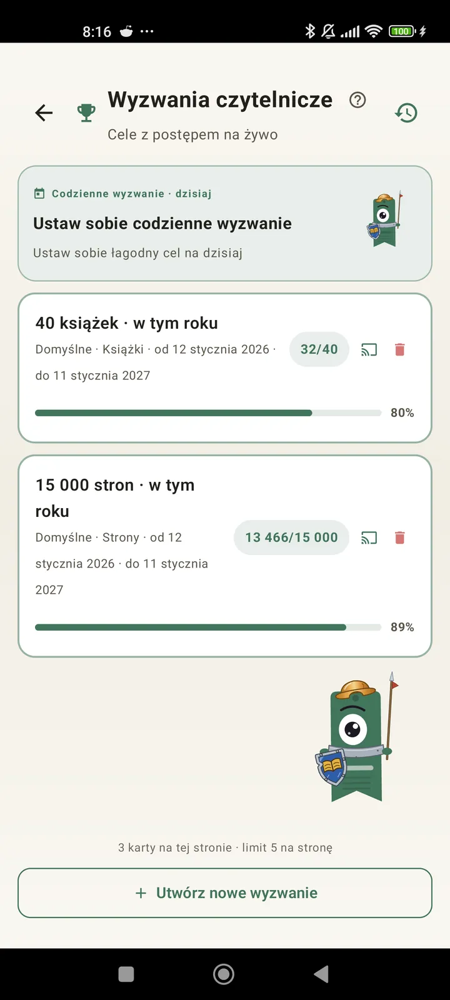

Poznaj siebie jako czytelnika
Wyzwania, bingo, widżety i więcej funkcji, żeby wycisnąć z czytania jak najwięcej. Nowość w 3.7: widżety wyzwań i bingo.

Wyzwania czytelnicze
Ustawiaj cele według stron, serii lub gatunków. Do 15 aktywnych wyzwań za darmo, bez limitu z Pro. Do tego personalizowane wyzwanie dnia, które nie wlicza się do limitu.

Wyzwanie dnia
Nowy cel każdego dnia. Zrealizuj wyzwanie przed północą, żeby utrzymać serię.

Bingo czytelnicze
Co miesiąc dwa nowe bingo z tematycznymi polami. Wypełniaj wiersze, kolumny lub całą kartę.

Podsumowanie tygodnia
Co poniedziałek rzut oka na Twój tydzień: przeczytane strony, łączny czas, seria i porównanie z poprzednim tygodniem.

Podsumowanie miesiąca
Gdy miesiąc się kończy, Lecturameter go podsumowuje: strony, czas, ukończone książki, Twoje tempo dzień po dniu i książka miesiąca.

Widżet bingo Pro
Karta bingo z tego miesiąca, zawsze na widoku, z ukończonymi polami i ułożonymi liniami.

Widżet książki Darmowe
Zobacz książkę, którą czytasz, prosto na ekranie głównym: okładka, tytuł, autor, strony i procent postępu, zawsze aktualne. Zmienisz mu rozmiar, jak chcesz.
Serio, stary, ta aplikacja jest jak terapia. Z kilku stron dziennie doszedłem do jakichś 20 stron dziennie i nadal się poprawiamOpinia użytkownika, nadesłana e-mailem

Porównanie miesięcy Pro
Szybki rzut oka na ostatnie miesiące bez otwierania aplikacji. Słupki ze stronami z każdego miesiąca, bieżący wyróżniony, żebyś od razu widział, czy w tym miesiącu idzie Ci lepiej, czy gorzej niż w poprzednim.

Widżet wyzwań Pro
Twoje aktywne wyzwania i ich postęp na ekranie głównym. Wybierz, które pokazywać, na ekranie Wyzwań.